Tue, 27 Mar 2012 09:02:34 GMT
Logitech UE Air Speaker, sistema de sonido compatible con AirPlay
Logitech UE Air Speaker, sistema de sonido compatible con AirPlay
Logitech no descansa, la empresa mundialmente conocida por crear los mejores ratones y teclados del mundo no para de añadir nuevos productos en accesorios para otros grandes productos, como el nuevo Logitech UE Air, un nuevo sistema de audio/altavoz/barra de sonido compatible con el sistema de streaming de música vía Wi-Fi Apple AirPlay. Es un buen paso para Apple y para Logitech, que aunque hemos visto cantidad de equipos compatibles, Logitech tiene una marca mucho más visible y esta es su primer equipo compatible con esta tecnología. El equipo funciona...
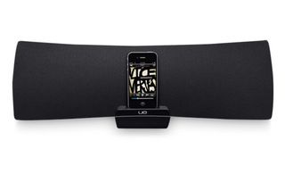
Logitech no descansa, la empresa mundialmente conocida por crear los mejores ratones y teclados del mundo no para de añadir nuevos productos en accesorios para otros grandes productos, como el nuevo Logitech UE Air, un nuevo sistema de audio/altavoz/barra de sonido compatible con el sistema de streaming de música vía Wi-Fi Apple AirPlay.
Es un buen paso para Apple y para Logitech, que aunque hemos visto cantidad de equipos compatibles, Logitech tiene una marca mucho más visible y esta es su primer equipo compatible con esta tecnología.
El equipo funciona para los iPhone y iPod conectándolo tanto de forma inalámbrica como con su propio Dock que viene escondido en la parte frontal. Si lo quieres usar con otro dispositivo como un iPad, solo podrás conectarlo inalámbricamente. Y tranquilidad si no tienes un iPhone, iPod o iPad; este UE Air Speaker incluye una conexión de audio auxiliar en la parte trasera para poder reproducir tu música. Incluye el logo de su marca de auriculares profesionales “Ultimate Ears”, empresa que compró en 2008 y que prácticamente se dedica a la creación de auriculares in-ear para amantes del audio y profesionales, lo que parece es el primer intento de expandir esta marca a más dispositivos de audio.
El sistema de audio Logitech UE Air Speaker estará disponible en breve, Logitech espera tenerlo en tiendas alrededor de Abril por 349€. Se supone que al mismo precio que se podrá encontrar en tiendas físicas, por lo que si no lo compras desde la web de Logitech o desde alguna otra tienda online, es posible que lo encuentres en grandes superficies de audio e informática.
Logitech incluye la aplicación para iOS llamada Logitech UE Air App para la configuración del equipo de audio, así como configurar el balance, bajos, nombre del equipo…

Tue, 27 Mar 2012 01:01:12 GMT
Archos Arnova 9 G3, la tableta económica de 9” y Android ICS
Archos Arnova 9 G3, la tableta económica de 9” y Android ICS
Puede que llegue el momento en que la “industria” me demuestre contrario, pero desde hace tiempo vengo pensando, bueno, no soy el único, que las tabletas con Android reinarán con precios bajos y potencia lo suficientemente decente como para mover lo que el consumidor promedio demanda: vídeos (HD), juegos, etcétera. ARCHOS es un ejemplo de lo que hablo, al igual que Amazon, pero sin duda el primero se viene armándose con una buena oferta que dentro de poco haría que esté entre los más buscados. Ya nos mostraron sus planes...
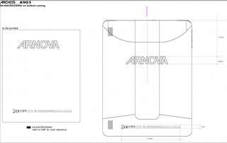
Puede que llegue el momento en que la “industria” me demuestre contrario, pero desde hace tiempo vengo pensando, bueno, no soy el único, que las tabletas con Android reinarán con precios bajos y potencia lo suficientemente decente como para mover lo que el consumidor promedio demanda: vídeos (HD), juegos, etcétera. ARCHOS es un ejemplo de lo que hablo, al igual que Amazon, pero sin duda el primero se viene armándose con una buena oferta que dentro de poco haría que esté entre los más buscados.
Ya nos mostraron sus planes para este año y dentro de él se encontraba una nueva línea de productos de gama media, económicos y con prestaciones decentes. Al parecer la FCC se jugado otro modelo y según revelan, el nuevo producto de ARCHOS llevaría por nombre Archos Arnova 9 G3. Se trataría de una tableta con pantalla de 9.7 pulgadas, con resolución de 1024 x 768 píxeles y tecnología IPS.
El panel de alta definición se combinaría con un procesador Rockchip RK2918 de núcleo único a 1GHz, que acompañado de 1GB de RAM daría resultados de imágenes y procesamiento muy buenos. El almacenamiento sería de sólo 4GB y correría la última versión de Android 4.x, Ice Cream Sandwich.
Algo interesante de los productos de ARCHOS es que se están basando en tecnologías alternativas, venían utilizando procesador de Texas Intruments y ahora, para poder reducir precio bajan la cantidad de almacenamiento y se basan en hardware de empresas poco conocidas en comparación a gigantes para poder ofrecer soluciones económicas. Dentro de poco tendremos mayor información, ARCHOS también productos con tamaños de 7 y 8 pulgadas, espero que se animen en lanzar algún equipo con Windows 8.
Mon, 26 Mar 2012 23:08:23 GMT
Zotac ZBOX ID82, Nettops ahora con Intel Sandy Bridge
Zotac ZBOX ID82, Nettops ahora con Intel Sandy Bridge
Zotac es uno de esos ensambladores/fabricantes que siempre está ahí, aunque volando raso, sin causar un gran escándalo. La firma especializada en equipos minúsculos tiene predilección por las CPU de gama más económica, como Intel Atom, AMD Fusion de serie Llano, o incluso CPUs de la firma VIA, pero no es lo único que sabe hacer. La compañía presentaba durante el CeBIT de este año varios modelos que integran procesadores Intel Core i3 de segunda generación, Sandy Bridge, con una potencia bastante superior a la de las unidades más básicas....
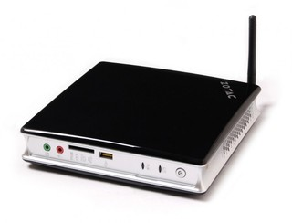
Zotac es uno de esos ensambladores/fabricantes que siempre está ahí, aunque volando raso, sin causar un gran escándalo. La firma especializada en equipos minúsculos tiene predilección por las CPU de gama más económica, como Intel Atom, AMD Fusion de serie Llano, o incluso CPUs de la firma VIA, pero no es lo único que sabe hacer. La compañía presentaba durante el CeBIT de este año varios modelos que integran procesadores Intel Core i3 de segunda generación, Sandy Bridge, con una potencia bastante superior a la de las unidades más básicas.
Los nuevos mini equipos Zotac ID82 cumplen con las funciones típicas de un ordenador multimedia para el salón, aunque también son capaces de realizar las tareas más exigentes gracias a la CPU Intel Core i3-2330M que integra, unidad procedente del mercado para ordenadores portátiles, y que por lo tanto cuenta con una gran eficiencia energética, con un consumo muy contenido, pero con dos núcleos a 2.2Ghz con 3MB de memoria caché, que debería ser más que suficiente para la mayoría de usos típicos de un ordenador de sobremesa, si obviamos por supuesto los videojuegos de alta exigencia, que debemos descartar por la humilde GPU Intel HD 3000 típica de este tipo de procesadores.
El nuevo mini ordenador de Zotac incorpora dos puertos USB 3.0, 4 puertos USB 2.0, un slot para discos duros o unidades SSD de 2.5 pulgadas, conectividad de red mediante Ethernet Gigabit y Wi-Fi 802.11b/g/n y Bluetooth 3.0, salida multimedia HDMI y audio digital mediante S/PDIF, y soporte para hasta 16GB de memoria DDR3 en módulos SODIMM, todo ello integrado en un chasis poco más grande que una unidad óptica estándar, todo un logro para estos equipos. Como es de esperar, el nuevo Zotac ID82 Sandy Bridge se comercializa de serie sin sistema operativo, y se podrán encontrar dos versiones: una con memoria y unidad de almacenamiento preinstaladas, y otra en estilo “barebone”, que únicamente incorporan la placa base con procesador, dejando al comprador la elección del resto de componentes. Todavía no han sido revelados los precios o la fecha de lanzamiento de estos Nettop, aunque ya se pueden empezar a ver en los distribuidores más importantes a precios a partir de los 300€.
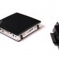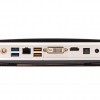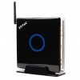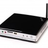
Mon, 26 Mar 2012 21:10:40 GMT
TX-NR818 y TX-NR717, los nuevos receptores de gama media de Onkyo con escalador a 4K
TX-NR818 y TX-NR717, los nuevos receptores de gama media de Onkyo con escalador a 4K
Si estabas pensando en renovar el equipo de sonido, puede que los nuevos equipos recién presentados por la casa Onkyo sean una opción interesante a considerar, sobre todo si tenemos en cuenta que estamos ante dos nuevos receptores AV de gama media con unas prestaciones más que interesantes. Tanto el tope de gama (TX-NR818) como el modelo más básico (TX-NR717) cuentan con potentes características entre las que se incluyen la posibilidad de reproducción en red, puertos USB, compatibilidad con dispositivos iOS, certificación DLNA y acceso a sites de Internet como...
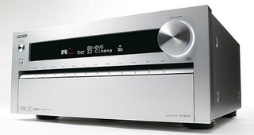
Si estabas pensando en renovar el equipo de sonido, puede que los nuevos equipos recién presentados por la casa Onkyo sean una opción interesante a considerar, sobre todo si tenemos en cuenta que estamos ante dos nuevos receptores AV de gama media con unas prestaciones más que interesantes. Tanto el tope de gama (TX-NR818) como el modelo más básico (TX-NR717) cuentan con potentes características entre las que se incluyen la posibilidad de reproducción en red, puertos USB, compatibilidad con dispositivos iOS, certificación DLNA y acceso a sites de Internet como Spotify, Pandora o vTuner tanto vía RJ45 como a través de Wi-Fi (esto último gracias a un adaptador opcional).
Además tenemos certificación THX-Select 2 Plus así como soporte de los nuevos formatos como el Blu-ray 3D por lo que contamos con canal de retorno y decodificación de los principales sistemas de la actualidad como Dolby Pro Logic IIz o Audyssey DSX. Con un total de 8 entradas y dos salidas HDMI 1.4, quizás la característica más impactante es la capacidad de los dos receptores para escalar cualquier fuente de vídeo que le metamos por cualquiera de sus entradas, no sólo hasta los 1080p, sino hasta unos impresionantes 4K.
En el apartado de diferencias, quizás la más notable sea que el equipo tope de gama (TX-NR717) incluye chips separados para el escalado a 1080p (IDT HQV Vida VHD1900) y 4K (Marvel QDEO); mientras que su hermano pequeño sólo cuenta con el QDEO para ambas funciones. Ambos equipos no estarán disponibles hasta bien entrado el mes de mayo, con precios respectivos de $1199 y $999.
Mon, 26 Mar 2012 19:35:20 GMT
Novatech nFinity 2367: pantalla de 14”, SSD, Intel Core y 18mm de grosor
Novatech nFinity 2367: pantalla de 14”, SSD, Intel Core y 18mm de grosor
Novatech presenta su apuesta a la línea de Ultrabooks a pesar de no respetar el formato de Intel de hasta 13”. De cualquier manera es un portátil que cuenta con el hardware que muchas de las portátiles ultra-delgadas y potentes llevan en la actualidad. Novatech nFinity 2367 cuenta con pantalla de 14.1”, con configuración para cualquiera de los de procesadores Intel Core y la opción de elegirla con almacenamiento SSD y HDD, pero esto último aún sin detalles. La resolución de la pantalla, lamentablemente no es Full HD, pero se...
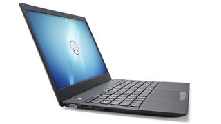
Novatech presenta su apuesta a la línea de Ultrabooks a pesar de no respetar el formato de Intel de hasta 13”. De cualquier manera es un portátil que cuenta con el hardware que muchas de las portátiles ultra-delgadas y potentes llevan en la actualidad. Novatech nFinity 2367 cuenta con pantalla de 14.1”, con configuración para cualquiera de los de procesadores Intel Core y la opción de elegirla con almacenamiento SSD y HDD, pero esto último aún sin detalles.
La resolución de la pantalla, lamentablemente no es Full HD, pero se mantiene en la alta definición con 1366 x 768 píxeles, sobre el almacenamiento tenemos la posibilidad elegir como base 64GB y aumentar a 128GB. La potencia de los procesadores puede ser configurada a partir del modelo base con un Intel Core i3-2367M a 1.4GHz, Core i5-2467M a 1.6GHz (hasta 2.3 GHz en Turbo Boost), mientras que la configuración más la tendríamos con el Core i7-2637M a 1.7GHz (2,8 GHz turbo Boot).
Otras especificaciones que se integran son dos puertos USB 2.0, HDMI, lector de tarjetas todo en uno, cámara de 1.3 megapíxeles y alcance de batería para 7 horas de usabilidad. Para lograr llegar a los 18 milímetros de grosor se tuvo que prescindir de la unidad óptica. Si queremos una comparación modelos de la misma gama, tal vez la ausencia de puertos USB 3.0 es algo que se extrañe, pero que no prohíbe que sea una alternativa. De hecho, en Techradar la probaron y la calificaron con 4/5 que no es malo para ser un equipo que no proviene de grandes empresas.
Sobre los precios y la disponibilidad tenemos que el modelo básico comienza en un aproximado de 517 euros mientras que el modelo con configuración más alta alcanzaría los 830 euros. Según la web de Novatech, los envíos se comenzaría a realizar a partir del 30 de marzo.
Mon, 26 Mar 2012 17:07:28 GMT
Cargas 100 veces más rápidas con capacitadores de grafeno, el futuro de las baterías
Cargas 100 veces más rápidas con capacitadores de grafeno, el futuro de las baterías
Las baterías actuales, tal como las conocemos, han alcanzado una especie de barrera insuperable, y su desarrollo y avance comienza a ser muy lento, pudiendo apenas mejorar la capacidad de estas, y no su velocidad de carga. Mientras que el aumento de capacidad es una gran noticia, si debemos emplear 3, 6, u 8 horas — dependiendo del dispositivo — para completar un ciclo de carga completo estamos anclados a una toma de corriente durante una gran parte del día, lo que resulta contraproducente en todo tipo de aparatos electrónicos....
Las baterías actuales, tal como las conocemos, han alcanzado una especie de barrera insuperable, y su desarrollo y avance comienza a ser muy lento, pudiendo apenas mejorar la capacidad de estas, y no su velocidad de carga. Mientras que el aumento de capacidad es una gran noticia, si debemos emplear 3, 6, u 8 horas — dependiendo del dispositivo — para completar un ciclo de carga completo estamos anclados a una toma de corriente durante una gran parte del día, lo que resulta contraproducente en todo tipo de aparatos electrónicos.
Un modo en que las compañías quieren remediar esto son los capacitadores; reemplazando a las baterías tradicionales, estos pequeños dispositivos consiguen almacenar una pequeña cantidad de energía que van soltando poco a poco, pero su gran ventaja es que los tiempos de carga necesarios para que funcionen durante un cierto periodo de tiempo son ridículos comparados con los de las baterías convencionales, de níquel, cadmio, hidruro metálico, o litio. Para poner un ejemplo actual, Genius ha creado un ratón (actualmente a la venta) inalámbrico con capacitador como método de alimentación único, que es capaz de ofrecer hasta una semana de uso con tan sólo tres minutos de carga.
Pero los capacitadores convencionales son inútiles en lo que respecta a dispositivos con mayores requerimientos energéticos, y aquí es donde entran en juego los supercapacitadores de grafeno. Investigadores de la Universidad de California, LA, han encontrado una manera de aumentar la densidad de energía en estos dispositivos, convirtiéndolos en una alternativa muy interesante para reemplazar las baterías. Estos nuevos supercapacitadores utilizan electrodos fabricados con grafeno, el material del futuro, cuyas propiedades eléctricas y sus recién descubiertos “excelentes atributos electroquímicos” lo convierten en una opción ideal para este tipo de uso.
Los científicos tras el proyecto aseguran que sus supercapacitadores de grafeno consiguen almacenar prácticamente la misma cantidad de energía eléctrica que una batería estándar, e incorporan una ventaja con respecto a estas, que podría “cambiar la manera en la que usamos gadgets y otros productos que requieren batería”: Pueden cargarse más de 100 veces más rápido que las baterías. El proceso para crear estos dispositivos de alimentación, curiosamente, está basado en la manera en la que los discos ópticos (DVD) son cubiertos por una fina capa de óxido de grafico, que después se trata con laser, lo que puede producir electrodos de grafeno. Teléfonos, tablets, ordenadores, coches eléctricos, todos podrían aprovecharse de esta tecnología. Sinceramente, no me importaría seguir cargando mi smartphone a diario (cada dos días, realmente) si puedo hacerlo en apenas unos minutos.
Mon, 26 Mar 2012 15:03:29 GMT
NEC desarrolla pantallas táctiles de próxima generación con “Feedback”
NEC desarrolla pantallas táctiles de próxima generación con “Feedback”
Si hay algo negativo en la adaptación a las interfaces táctiles es que estas carecen de una respuesta “táctil” que nos informe específicamente de qué estamos haciendo. No hablo de la vibración háptica presente en las pantallas resistivas, ni del “golpecito” al escribir en un teclado virtual, sino de respuestas que se asocien con todo tipo de acciones, y transmitan, por ejemplo, el movimiento. Ya se está intentando implementar sistemas de este tipo en paneles táctiles, utilizando distintas formas de tecnología, como campos electrostáticos, que añadirían sensación de “rugosidad” creando...
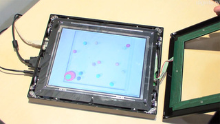
Si hay algo negativo en la adaptación a las interfaces táctiles es que estas carecen de una respuesta “táctil” que nos informe específicamente de qué estamos haciendo. No hablo de la vibración háptica presente en las pantallas resistivas, ni del “golpecito” al escribir en un teclado virtual, sino de respuestas que se asocien con todo tipo de acciones, y transmitan, por ejemplo, el movimiento. Ya se está intentando implementar sistemas de este tipo en paneles táctiles, utilizando distintas formas de tecnología, como campos electrostáticos, que añadirían sensación de “rugosidad” creando texturas en la superficie de la pantalla, o fluidos magnéticos debajo del panel, que conseguirían poner un relieve sobre los teclados en pantalla, pero estos sistemas parecen haber pasado a un estado durmiente, o no avanzar lo suficientemente rápido.
NEC ha elegido otra aproximación para enfrentarse a este reto; La compañía japonesa y el Instituto de Tecnología de Tokyo buscaban algo más sencillo para implementar respuestas sensoriales a la interacción con pantallas táctiles, y en lugar de crear un complicado sistema como los ya mencionados, han optado por enganchar un delgadísimo alambre a cada esquina del display. ¿Qué consiguen con esto? cuando se aplica presión en la pantalla, el dispositivo de respuesta tensa uno o más alambres en función de la dirección de la pulsación, de modo que esta se desplaza físicamente (aunque muy ligeramente) creando una respuesta identificable que por ejemplo nos permita localizar un objeto en pantalla, o reaccione cuando algo en la imagen colisiona con “los bordes”, logrando una mayor precisión que la simple vibración a la que estamos acostumbrados. DigInfo ha publicado un vídeo mostrando la tecnología en acción, donde sus creadores explican su funcionamiento en términos bastante sencillos, que ayudan a comprender mejor el funcionamiento del panel con varios ejemplos prácticos, como el de una “pelota” localizada en el centro sobre la que chocan muchos objetos, pudiendo determinar la dirección de la que proviene cada uno tan solo con mantener nuestro dedo en la superficie de la pantalla.
El sistema, interesante como pocos que se han mostrado hasta el momento, está en una fase de desarrollo relativamente temprana, y el prototipo actual es extremadamente grande y aparatoso, demasiado como para que en este momento se pueda considerar su uso en dispositivos móviles como Tablets o Smartphones, aunque sería un sistema muy interesante para ordenadores personales de sobremesa, “todo-en-uno” táctiles, o incluso sistemas de navegación. Otro detalle a destacar es que parece realmente ruidoso (en perspectiva) y parece necesitar sensores ópticos en el marco del dispositivo, de modo que no se podría implementar en pantallas sin borde, o con el cristal por encima de este.
Mon, 26 Mar 2012 10:18:59 GMT
El futuro de los Chromebook
El futuro de los Chromebook
Google no da por perdido el esfuerzo hecho en ChromeOS, el sistema operativo basado en Chrome y Linux para portátiles que solo necesitan conectarse a internet. Lo raro de Google es que sigan apostando por un sistema tan sumamente básico al que no puedes instalar aplicaciones, si no “extensiones” que suelen ser links a páginas webs, mientras tienen Android para tablets, aparatos que cuestan prácticamente lo mismo o incluso menos. ChromeOS puede que siga siendo un sistema interesante para netbooks o portátiles antiguos que solo necesitan acceder a internet y...
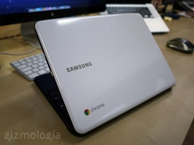
Google no da por perdido el esfuerzo hecho en ChromeOS, el sistema operativo basado en Chrome y Linux para portátiles que solo necesitan conectarse a internet. Lo raro de Google es que sigan apostando por un sistema tan sumamente básico al que no puedes instalar aplicaciones, si no “extensiones” que suelen ser links a páginas webs, mientras tienen Android para tablets, aparatos que cuestan prácticamente lo mismo o incluso menos.
ChromeOS puede que siga siendo un sistema interesante para netbooks o portátiles antiguos que solo necesitan acceder a internet y poco más. Google quería que los futuros ChromeBooks fuesen más rápidos, cosa que hasta ahora no lo son por culpa de procesadores Intel Atom, además de ser más simples en cuanto a diseño y que la seguridad sea uno de sus puntos fuertes (aunque eso es algo más por parte de Google en el software que por parte del fabricante en hardware).
Ya probamos el Samsung Series 5 en nuestro análisis y sacamos en claro que este portátil y sistema operativo está tan limitados que su uso es muy escaso y frustrante para un usuario medio. Incluso si eres una persona que solo se conecta a internet una tablet Android o un iPad es más recomendable por tamaño y sencillez. Sony está a punto de lanzar un Chromebook y además se espera que la siguiente versión de ChromeOS sea compatible con procesadores ARM, el futuro de ChromeOS parece que se mueve.
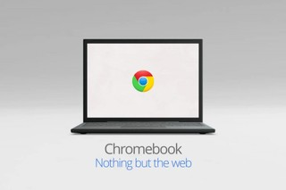
¿Qué es lo siguiente?
-
Soporte de procesadores ARM: De acuerdo, esta ya está a punto, pero el que se puedan usar procesadores basados en ARM permite a fabricante usar procesadores no necesariamente más lentos, pero con menor consumo de energía y más baratos que los de Intel.
-
Aplicaciones: inicialmente esto iría en contra de la base de ChromeOS, ya que este sistema operativo es “nada más que la web”, un navegador y nada más. Pero a la gente le gusta las aplicaciones, y lo que la Chrome Web Store ofrece en su gran mayoría son links que te llevan a una web, en vez de aplicaciones propias que usen Chrome como soporte.
-
Portátiles ultrabaratos: Aun quedan ultrabooks a la venta, son cada vez menos pero ahí están en algunas tiendas, con Windows 7 instalado lo que hace que sea un portátil ligero pero lento de usar. ChromeOS tiene una posibilidad si no fuese tan ridículamente caro uno de estos terminales. ¿Más de 400 euros por un portátil que solo es un navegador? Por favor… Se necesitan terminales más simples y con una reducción fuerte de precio, de por lo menos un precio máximo de 300 euros.
-
Un repaso a la interfaz: Aunque ChromeOS no cambiará a no ser que Chrome cambie, le vendría bien a la interfaz de Chrome ser algo más visual y no tan estrictamente simple.
Abrir ChromeOS para otros portátiles
Quiero instalar ChromeOS en un portátil viejo, ¿de donde me descargo ChromeOS? De acuerdo, llego a la web de Chronium OS, ¿y de ahí? Google debería dejar más claro y aportar más a ChromeOS como un sistema operativo más abierto para poder instalarse en otros portátiles, que aunque viejos, se les puede dar una segunda oportunidad y uso para personas que no necesiten más.
Sun, 25 Mar 2012 23:13:51 GMT
Volantes con respuesta háptica: asistencia GPS táctil
Volantes con respuesta háptica: asistencia GPS táctil
Los navegadores GPS son una herramienta tremendamente útil para mucha gente, y las instrucciones de voz nos ayudan a centrar la vista y atención en la carretera, para asegurar una conducción más segura. No obstante estas direcciones pueden ser algo “confusas” para muchos usuarios, o no llegar con la suficiente claridad, o con la presteza óptima, y algunos estudios aseguran que pueden incluso llegar a distraer al conductor, siendo incluso tan peligrosas como apartar la vista del frente para revisar el mapa. ¿Cómo mejorar el sistema? Los laboratorios de desarrollo...
Los navegadores GPS son una herramienta tremendamente útil para mucha gente, y las instrucciones de voz nos ayudan a centrar la vista y atención en la carretera, para asegurar una conducción más segura. No obstante estas direcciones pueden ser algo “confusas” para muchos usuarios, o no llegar con la suficiente claridad, o con la presteza óptima, y algunos estudios aseguran que pueden incluso llegar a distraer al conductor, siendo incluso tan peligrosas como apartar la vista del frente para revisar el mapa. ¿Cómo mejorar el sistema? Los laboratorios de desarrollo de AT&T en conjunto con la Universidad Carnegy Mellon en Pensilvania, Estados Unidos trabajan en la solución: Volantes con respuesta háptica.
Tan extraño como suena, esta podría ser la respuesta que conduzca a la navegación GPS en el coche a un nivel superior. Con 20 pequeños motores activadores, el sistema envía señales de “izquierda” o “derecha” al conductor mediante pequeñas vibraciones, que se desplazan por el interior del volante en el sentido de las agujas del reloj y al contrario respectivamente, haciendo que se reaccione de un modo natural, en teoría más rápida y suavemente que con la navegación por voz. Este sistema de respuesta “táctil” está preparado para funcionar con unidades GPS tradicionales, junto a las instrucciones de voz y el habitual mapa, a los que no sustituiría, aunque sí ayudaría a mejorarlos. Pero según las pruebas realizadas por los equipos de desarrollo, cuando se utilizó en solitario, sin ayudas visuales o sonoras, los conductores con edades entorno a los 25 años que testearon el sistema pasaron un 3.1% más de tiempo con sus ojos en la carretera, en comparacion con un navegador convencional. El mismo test no tuvo ningún impacto en usuarios sobre los 65 años, pero sí consiguieron una atención a la carretera un 4% más alta en este grupo de usuarios cuando se utilizó el sistema junto a las instrucciones de voz.
Además de las señales táctiles para la ayuda a la navegación, el sistema de respuesta háptica investigado por AT&T y CMU también enviaría avisos mediante distintos tipos de vibración cuando algún otro vehículo u obstáculo entra en el punto ciego del coche, o cuando por descuido olvidamos la distancia de seguridad y circulamos muy cerca del vehículo de delante. Lo cierto es que suena muy interesante, aunque también habrá que pensar si la gente está preparada o tarda en acostumbrarse a que el volante de su coche vibre “aleatoriamente”, sin que esto cause un problema de seguridad en la vía.
Foto (CC) meghannash
Sat, 24 Mar 2012 17:20:37 GMT
Como funciona la pantalla flotante del Xperia Sola
Como funciona la pantalla flotante del Xperia Sola
El nuevo Sony Xperia Sola se presentó hace unas semanas, uno de los nuevos terminales de la nueva Sony sin el “Ericsson”. Este terminal no es precisamente uno de los mejores terminales que adquirir en un futuro por su falta de Android 4.0, llegará a las tiendas con un desfasado Android 2.3 (Gingerbread). Pero una de las novedades de este terminal es que llega con una pantalla capaz de detectar tu dedo a distancia, a apenas unos milímetros, como mucho un centímetro, pero lo suficiente como para ser un nuevo...
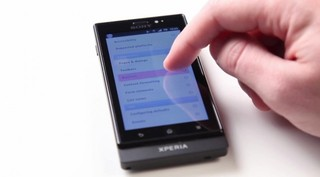
El nuevo Sony Xperia Sola se presentó hace unas semanas, uno de los nuevos terminales de la nueva Sony sin el “Ericsson”. Este terminal no es precisamente uno de los mejores terminales que adquirir en un futuro por su falta de Android 4.0, llegará a las tiendas con un desfasado Android 2.3 (Gingerbread). Pero una de las novedades de este terminal es que llega con una pantalla capaz de detectar tu dedo a distancia, a apenas unos milímetros, como mucho un centímetro, pero lo suficiente como para ser un nuevo tipo de navegación por pantallas táctiles interesante. Entre otras características tiene NFC y cámara capaz de grabar vídeo en 720p. No es el “super smartphone” de gama alta de Sony, en realidad es un terminal de gama media avanzado para los que quieren algo interesante sin tener que hipotecarse.
Esta tecnología de pantalla la explica Sony a un nivel más técnico, pero básicamente se trata de una capa táctil que detecta los electrones de tu dedo en el panel, como cualquier otra pantalla capacitiva, y además usa una tecnología llamada “Self Capacitance” que detecta el movimiento del dedo hasta unos 22 milímetros de distancia. Esta tecnología permite ahora mismo un par de movimientos en este terminal, pero existe una API para desarrolladores disponible para los dispositivos Sony.
Que posibilidades tiene estas pantalla
Una de las cosas más interesantes de esta pantalla es el nivel de posibilidades que ahora se puede tener, ya que al ser capaz de detectar hasta a 22 milímetros de distancia, se podría añadir un nuevo eje de coordenadas para interactuar con tu terminal.
Así, podríamos llegar a ver juegos que usen la profundidad y el nivel de presión en la pantalla (sin llegar a tocarla, claro), o incluso aplicaciones que usen tres coordenadas para interactuar con ellas. Y aquí llega lo que sería interesante, verlo en una tablet con un tamaño de pantalla mucho mayor. Imagina una tablet de 10 pulgadas con la que puedes interactuar tocando la pantalla en vertical y horizontal, como ahora haces, pero además en profundidad.
Sat, 24 Mar 2012 02:10:54 GMT
Storm Sentinel Advance II, o mayor precisión para gamers
Storm Sentinel Advance II, o mayor precisión para gamers
Tenía mucho tiempo sin saber de Cooler Master, pero afortunadamente parece que ya están volviendo al ruedo con una nueva apuesta y oferta (en parte) para los amantes y más exigentes del gaming. La nueva versión de ratón está casi lista para ser comercializada y desde ya nos anuncian sus detalles oficiales. Se trata de Cooler Master Storm Sentinel Advance II, un ratón para jugones/gamers que busca cumplir con los más exigentes (aunque no lo vayas a usar al máximo). La configuración no es tan amplia como la del Vengeance...
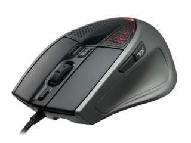
Tenía mucho tiempo sin saber de Cooler Master, pero afortunadamente parece que ya están volviendo al ruedo con una nueva apuesta y oferta (en parte) para los amantes y más exigentes del gaming. La nueva versión de ratón está casi lista para ser comercializada y desde ya nos anuncian sus detalles oficiales.
Se trata de Cooler Master Storm Sentinel Advance II, un ratón para jugones/gamers que busca cumplir con los más exigentes (aunque no lo vayas a usar al máximo). La configuración no es tan amplia como la del Vengeance M90, pero de igual manera cuenta con ocho botones programables y memoria para almacenar hasta 4 perfiles para los dpi. Detallando las capacidades, la sensibilidad cuenta con cuatro escalones entre 125Hz y 1000Hz mientras la configuración de los puntos por pulgadas o dpi están entre 200 y 8200.
El atractivo que quizás más guste es la configuración de luces LED para cada perfil, así como la configuración de nueve botones virtuales mediante combinación de los ocho físicos. La especificaciones los hacen ratón sencillo pero cumplidor, lamentablemente no se revela precio o fecha de salida aún, por este lado seguiré pendiente para ver si logra seguir siendo atractivo luego de revelar el precio.
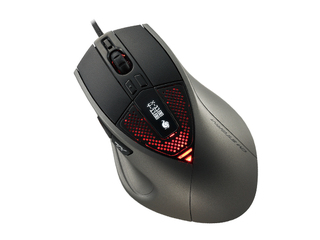
Sat, 24 Mar 2012 00:08:48 GMT
Chrome OS “Daisy”, dispositivo basado en ARM con el sistema de Google basado en la nube
Chrome OS “Daisy”, dispositivo basado en ARM con el sistema de Google basado en la nube
Seamos sinceros, a pesar del apoyo de Google, Chrome OS no ha sido para nada un éxito. Las “limitaciones” del sistema operativo, como tener que estar conectado todo el tiempo para que sea útil, el poco almacenamiento de Chromebooks, su precio y la poca variedad de hardware han relegado a la apuesta de “cloud computing” de Google a un puesto muy secundario en el panorama de los ordenadores de entretenimiento y productividad. Pero la compañía del buscador sigue empeñada en sacar adelante este proyecto, tomando medidas como la integración con...
Seamos sinceros, a pesar del apoyo de Google, Chrome OS no ha sido para nada un éxito. Las “limitaciones” del sistema operativo, como tener que estar conectado todo el tiempo para que sea útil, el poco almacenamiento de Chromebooks, su precio y la poca variedad de hardware han relegado a la apuesta de “cloud computing” de Google a un puesto muy secundario en el panorama de los ordenadores de entretenimiento y productividad. Pero la compañía del buscador sigue empeñada en sacar adelante este proyecto, tomando medidas como la integración con Android Jelly Bean, y preparando nuevos dispositivos que llegarían de la mano de Samsung, que prepara un Chromebook basado en Intel Celeron, y lo que parece más curioso, un “Chromebox”, u ordenador de sobremesa con el sistema operativo “lite”.
Otro de los esfuerzos por mejorar el estado de Chrome OS en el mercado parece llegar desde un frente inesperado, pero a la vez lógico. En el monitor de versiones de Chrome OS, alguien ha observado bastantes menciones a un nuevo producto con nombre en código “Daisy”, del que no se conocen ni formato ni características, pero que según parece está basado en el SoC Exynos 5250 se Samsung, que en teoría estaría integrado en el próximo terminal de la compañía, Samsung Galaxy S III. El próximo todo-en-uno de la compañía coreana será uno de los primeros en tocar tierra con el nuevo diseño ARM Cortex-A15 fabricado con tecnología de 32nm, y tendrá frecuencias de reloj de hasta 2Ghz, con un índice de consumo inferior al de actuales SoC basados en ARM Cortex-A9 — para entendernos, Tegra 2, Tegra 3, Apple A5, Apple A5X y demás variantes de distintos fabricantes — y huelga decir que también consigue un consumo muy por debajo de los actuales dispositivos Chrome OS con procesadores Intel Atom.
¿Qué es este nuevo dispositivo? La lógica, la rumorología, o incluso la cartomancia nos fallan para intentar adivinar qué podría ser “Daisy”, pero si me preguntais a mí, diría que se trata de una nueva generación de Chromebooks con una autonomía infinitamente mayor, o bien la primera tablet oficial Chrome OS.
Fri, 23 Mar 2012 22:04:03 GMT
Leica M9-P: edición especial en blanco por $31.695
Leica M9-P: edición especial en blanco por $31.695
Si tienes los bolsillos más que holgados o si simplemente te acaba de tocar la lotería y además te apasiona la fotografía, entonces quizás tengas que plantearte la adquisición de la nueva edición especial de la cámara fotográfica M9-P de la casa Leica. Lo digo porque estamos ante una edición más que especial. No sólo por su acabado en color blanco sino sobre todo, porque solo saldrán a la venta 50 unidades en esta versión super limitada. Y lo curioso del asunto es que esas son todas las diferencias con...
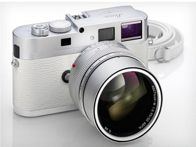
Si tienes los bolsillos más que holgados o si simplemente te acaba de tocar la lotería y además te apasiona la fotografía, entonces quizás tengas que plantearte la adquisición de la nueva edición especial de la cámara fotográfica M9-P de la casa Leica. Lo digo porque estamos ante una edición más que especial. No sólo por su acabado en color blanco sino sobre todo, porque solo saldrán a la venta 50 unidades en esta versión super limitada.
Y lo curioso del asunto es que esas son todas las diferencias con el modelo standard M9-P. Puesto que tenemos mismo cuerpo con acabado en piel, el mismo sensor Full Frame de 18 Mpx y el mismo sistema de lentes intercambiables que dicho modelo. Eso sí, la diferencia de precio es más que sencilbe, puesto que mientras que el modelo básico está a la venta por tan “sólo” $7995; esta edición especial saldrá a la calle por la increíble cifra de $31.695.
Lo que obtendría con este nuevo modelo es entonces la exclusividad de un equipo que sólo se venderá en Japón coincidiendo con la apertura de la tienda Leica Daimaru en Tokyo. Eso sí, indicar que el equipo también incluye un objetivo Nocitlus M f0.95/50mm ASPH en acabado en plata, que tampoco es que sea precisamente barato. En fin, que teniendo dinero, como para todo, es cuestión de gustos y prioridades…

Tue, 27 Mar 2012 01:56:22 GMT
Tianma muestra prototipo de pantalla OLED con 12”
Tianma muestra prototipo de pantalla OLED con 12”
La tecnología OLED ofrece una solución practica y efectiva para el desarrollo de pantallas delgadas y flexibles con mayor brillo a diferencia de la tecnología LED, lamentablemente en una tecnología que aún está en creciente y por ende el coste de fabricación es bastante alto. Por ahora sólo hemos visto productos con pantallas de tamaños similares a los smarthones que se aprovechen y se comercialicen “bien” en comparación a productos de gran tamaño con televisores. PS Vita es un gran ejemplo de lo que una pantalla OLED es capaz de...
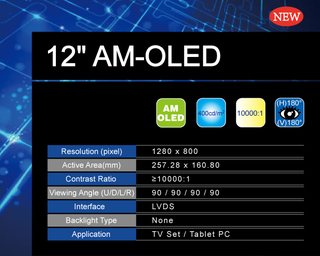
La tecnología OLED ofrece una solución practica y efectiva para el desarrollo de pantallas delgadas y flexibles con mayor brillo a diferencia de la tecnología LED, lamentablemente en una tecnología que aún está en creciente y por ende el coste de fabricación es bastante alto. Por ahora sólo hemos visto productos con pantallas de tamaños similares a los smarthones que se aprovechen y se comercialicen “bien” en comparación a productos de gran tamaño con televisores.
PS Vita es un gran ejemplo de lo que una pantalla OLED es capaz de ofrecer, y si bien este tipo de tecnología lo vemos generalmente de la mano de grandes empresas, Tianma, empresa que conocerán en su país natal, ha mostrado su oferta y primera incursión en las pantallas OLED con un prototipo de 12 pulgadas. La pantalla pueden ver en la parte superior fue mostrada durante una feria en China y, por lo que se puede ver en el vídeo, el resultado está a la altura de cualquier otra empresa.
Lamentablemente no se ahondó en los detalles, pero se pudo saber que la pantalla de Tianma cuenta con una resolución de 1280 × 800 píxeles, ratio de contraste bastante alto de 10.000:1 y brillo de 400 cd/m2. Especificaciones dignas de una pantalla con tecnología OLED. Lo lamentable es que se trata de un prototipo y no es creo que estemos cerca de verlo en este lado del mundo, pero es un gran avance que otras empresas le demuestren a Samsung, Sony o incluso LG, que hay buena competencia en camino.
Tue, 27 Mar 2012 00:08:42 GMT
Adidas Tennis Performance Bra: el sujetador inteligente que se comunica con tu móvil
Adidas Tennis Performance Bra: el sujetador inteligente que se comunica con tu móvil
Siguiendo en la línea de las famosas Adidas Adizero F50, la marca alemana continua en su afán por desarrollar ropa deportiva “inteligente” que mejore el rendimiento de los deportistas y aficionados. Después del fúltbol, ahora le ha llegado el turno al tenis, con el nuevo sistema Adidas Tennis Performance Bra. Sí, su nombre lo dice todo: un sujetador diseñado para que las chicas que gusten de dicho deporte, puedan llevar todo tipo de controles sobre su performace tenística. Desarrollado bajo la supervisión de la afamada diseñadora Stella McCartney, este sujetador...
Siguiendo en la línea de las famosas Adidas Adizero F50, la marca alemana continua en su afán por desarrollar ropa deportiva “inteligente” que mejore el rendimiento de los deportistas y aficionados. Después del fúltbol, ahora le ha llegado el turno al tenis, con el nuevo sistema Adidas Tennis Performance Bra. Sí, su nombre lo dice todo: un sujetador diseñado para que las chicas que gusten de dicho deporte, puedan llevar todo tipo de controles sobre su performace tenística.
Desarrollado bajo la supervisión de la afamada diseñadora Stella McCartney, este sujetador “Tennis Performance Bra” está realizado en tela CLIMALITE de modo que permita una rápida eliminación del sudor. Además incorpora como novedad una serie de puntos de sujeción frontales que permiten la incorporación de un sensor myCoach de Adidas. Sensor que no sólo llevará un completo control de tu frecuencia cardíaca a lo largo del partido, sino de algo que también es de sumo interés hoy en día: gracias a él, sabrás cuantas calorías habrás gastado durante el mismo.
Además, el sensor se conecta inalámbricamente con la aplicación miCoach, con lo que podrás tener un completo control sobre todos tus entrenamientos, geoposicianarlos, conocer frecuencia cardíaca, calorías gastadas y un sinfín de utilidades más. El Adidas Tennis Performance Bra se encuentra ya a la venta con colores rojo o blanco, con un precio de 55€ (los sensores se venden a parte).
Mon, 26 Mar 2012 22:00:37 GMT
Ahora también podrás editar vídeo con la PS3 gracias a PlayMemories Studio
Ahora también podrás editar vídeo con la PS3 gracias a PlayMemories Studio
Lo único que le faltaba a la PS3 para parecer más un ordenador que una consola acaba de hacer su aparición en Japón. Nos referimos a la posibilidad de editar tanto fotos como video gracias a la aplicación PlayMemories Studio de Sony. Presentada ya hace unos meses junto a su servicio de almacenamiento en la nube Sony PlayMemories, esta nueva aplicación que ya esta disponible para su descarga en territorio japonés, te permitirá hacer tus primeros pinitos en el mundo del celuloide. Con PlayMemories Studio podrás ver, editar y compartir...
Lo único que le faltaba a la PS3 para parecer más un ordenador que una consola acaba de hacer su aparición en Japón. Nos referimos a la posibilidad de editar tanto fotos como video gracias a la aplicación PlayMemories Studio de Sony. Presentada ya hace unos meses junto a su servicio de almacenamiento en la nube Sony PlayMemories, esta nueva aplicación que ya esta disponible para su descarga en territorio japonés, te permitirá hacer tus primeros pinitos en el mundo del celuloide.
Con PlayMemories Studio podrás ver, editar y compartir todas las fotos y vídeos que tengas en tu PS3 y como gran novedad, también todos aquellos que se encuentren en otros dispositivos externos siempre que los conectes a la consola a través del su puerto USB. Así, el resto de equipos de la línea marrón de Sony podrán interaccionar con su consola estrella. Pero no sólo ellos, ya que también admitirá como fuentes discos duros externos, sticks USB o cualquier otro medio de almacenamiento masivo.
Pero la función más llamativa de PlayMemories Studio es la de poder editar todo tus vídeos para que queden como el último videoclip del momento. Así, se podrá:
- Hacer zoom in y zoom out
- Realizar scroll en tiempo real sobre la propia imagen
- Añadirle diversos filtros a la imagen
- Incrustar efectos sonoros para darle otra dimensión a tus vídeos
- Aplicar efectos de slow motion
- Añadir títulos
Todo ello, de forma que al final puedas crear en pocos minutos, un supervídeo con tus mejores momentos y compartirlo en la red. Y esta es otra, ya que podrás subirlos directamente desde la aplicación tanto a Facebook, como al nuevo servicio de Sony PlayMemories Home. La aplicación ya está disponible para su descarga por 18€, aunque si no te atreves por el precio, hay una versión Trial para los más desconfiados.
Mon, 26 Mar 2012 20:01:26 GMT
Las cámaras EVIL son el futuro de la fotografía para aficionados
Las cámaras EVIL son el futuro de la fotografía para aficionados
El mundo de las cámaras digitales no para de evolucionar. Con la llegada de las compactas el mundo cambió por completo y dejó atrás el viejo formato de films en los que tenías que sacar una captura, ir a revelar, y recién ahí ver cómo había quedado todo. Un proceso lentísimo que cambió por completo. Pero eso también está cambiando y poco a poco el mercado de las compactas está quedando atrás. Esto se debe a que las que traen los móviles son cada vez mejores, cada vez vienen con...
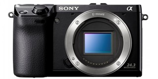
El mundo de las cámaras digitales no para de evolucionar. Con la llegada de las compactas el mundo cambió por completo y dejó atrás el viejo formato de films en los que tenías que sacar una captura, ir a revelar, y recién ahí ver cómo había quedado todo. Un proceso lentísimo que cambió por completo. Pero eso también está cambiando y poco a poco el mercado de las compactas está quedando atrás. Esto se debe a que las que traen los móviles son cada vez mejores, cada vez vienen con mejores lentes, mayor calidad y sus capacidades aumentan todos los meses.
El mundo DSLR todavía tiene su mercado porque es algo mucho más profesional pero, poco a poco, están empezando a tomar su lugar y acaparar el mercado las nuevas (y es nuevo en comparación a otras y no porque hayan salido hace poco) EVIL (Electronic Viewfinder Interchangeable Lenses). Estas cámaras, para el que no las conoce, son las que permiten cambiar sus objetivos y llegaron para acaparar el mundo de la fotografía para aficionados. Muchos usuarios que anteriormente utilizaban las mejores compactas o las réflex de gama baja están comenzando a adoptar esta nueva tecnología.
Las EVIL son modelos que se encuentran en el medio de las compactas y las DSLR. ¿Por qué? La diferencia con las DSLR es que no poseen un visor de espejo para ver la imagen que se fotografiará sino que hay una pantalla como las compactas. Pero aunque no tengamos un visor de espejo se puede seguir manteniendo la calidad y podemos intercambiar lentes sin problemas. De esta manera se mantiene el control manual y, al mismo tiempo, se reduce el peso para transportarla y también se permite tomar capturas muy interesantes para los fotógrafos amateurs -y no tanto también-.
Los primeros que llegaron con estas cámaras fueron los de Panasonic y Olympus con las Micro Cuatro Tercios y, poco tiempo después, se unió Samsung. Después llegó Sony y hoy todas las compañías tienen, al menos, uno de estos modelos en su catálogo porque el éxito que están presentando es muy grande.
¿Por qué ese éxito? Es simple. Hace un tiempo escribí una entrada un tanto desarrollada de por qué opino que, con el tiempo, las cámaras compactas desaparecerán. Para resumirlo, se debe a que las cámaras de los smartphones están evolucionando de una manera tal que ya no se puede diferenciar cuándo una captura fue tomada con un teléfono inteligente y cuando con una cámara point and shoot. Por otro lado, las DSLR no desaparecerán, pero sí la gama más baja será desplazada por este nuevo modelo de cámaras EVIL que traen innovación al mercado y una capacidad de mejorar las capturas o diferenciarlas según lo que se necesite gracias a los diferentes lentes que existen hoy en el mercado. No sólo por el precio, sino también porque las DSLR son cámaras que hay que saber usarlas. No es agarrarlas, apuntar y disparar. Esto sí lo permiten las EVIL y los resultados son extremadamente buenos.
Mon, 26 Mar 2012 18:02:25 GMT
Plantex MZK-KR150N, router inalámbrico empotrable en la pared
Plantex MZK-KR150N, router inalámbrico empotrable en la pared
Que los gadgets más extravagantes vienen del país del Sol naciente es algo más que un estereotipo; mientras otras regiones repiten lo que ya se ha hecho, o innovan en el plano estrictamente técnico, los nipones buscan el lado más creativo de la tecnología, buscando la funcionalidad oculta de cualquier dispositivo, o dándole un aspecto más interesante mediante algún “truco visual”. Este es el caso del nuevo producto de la compañía Planex Communications, que ha producido un router inalámbrico empotrable en la pared, imitando a una toma de corriente tradicional,...
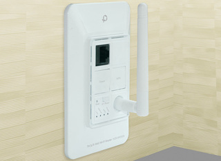
Que los gadgets más extravagantes vienen del país del Sol naciente es algo más que un estereotipo; mientras otras regiones repiten lo que ya se ha hecho, o innovan en el plano estrictamente técnico, los nipones buscan el lado más creativo de la tecnología, buscando la funcionalidad oculta de cualquier dispositivo, o dándole un aspecto más interesante mediante algún “truco visual”. Este es el caso del nuevo producto de la compañía Planex Communications, que ha producido un router inalámbrico empotrable en la pared, imitando a una toma de corriente tradicional, y siendo conectado directamente a los cables de corriente de la estancia, sin pasar por un enchufe, ya que integra el transformador en su interior.
El router MZK-KR150N no ocupa un espacio adicional sobre nuestro escritorio, ni es susceptible a caerse por un tropezón de un cable de red, o de alimentación y ofrece las funcionalidades estándar de cualquier router inalámbrico. Con conectividad Wi-Fi 802.11b/g/n el nuevo dispositivo de Plannex ofrece hasta 150Mbps de ancho de banda (como su nombre indica) con sistema WPS (Wi-Fi Protected Setup) que permite conectar rápidamente nuevos dispositivos, sin la necesidad de escribir la clave de red, incorpora un puerto ethernet 10/100Mbps, y puede colocarse tanto en modo router como punto de acceso. No obstante, el mismo principio que lo convierte en una solución ideal para espacios como oficinas, o estancias diáfanas, también hace que pierda funciones que habitualmente se atribuyen a este tipo de dispositivos. Para comenzar, este bicho necesita su propio hueco en la pared, y reemplaza a una toma de corriente que ya tuviésemos instalada previamente — eso, o hacemos un hueco adicional y compartimos los cables, depende de lo cómodos que nos encontremos con el bricolaje casero — lo que hace su instalación un poco más complicada que la de un router tradicional, y además, si optamos por reemplazar la placa anterior, perdemos el uso de los enchufes anteriores.
Otro de los inconvenientes del aparato, es que carece de las tomas extras habituales, estando limitado a un sólo puerto ethernet, que nos obligaría a conformarnos únicamente con la conexión inalámbrica, lo que puede ser contraproducente en algunos casos. En cualquier caso un concepto muy interesante del que probablemente veremos revisiones y “versiones” en el futuro próximo. Plannex MZK-KR150N llegará el próximo mes a Japón a un precio aproximado de US$119, un tanto alto para los estándares actuales teniendo en cuenta sus limitaciones, pero habitual en el país nipón. Una lástima que probablemente no lo veamos en occidente y tengamos que esperar a alguna “versión” de algún fabricante internacional.
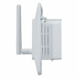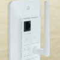
Mon, 26 Mar 2012 16:02:24 GMT
iZen Bamboo: Un teclado hecho de madera y completamente reciclable
iZen Bamboo: Un teclado hecho de madera y completamente reciclable
Hasta ahora se han visto varios productos hechos a base de bambú que nos parecieron interesantes. Considerando que ahora se empezó a tomar más conciencia en base al cuidado del medio ambiente es lógico que estos productos empiecen a ser más y más comunes. En esta oportunidad un diseñador puso en Kickstarter una de sus creaciones que resulta más que interesante: iZen Bamboo. Una de las características que lo hace más interesante es que está hecho en un 92% de bambú y es completamente reciclable. Esto no interesaría en absoluto...
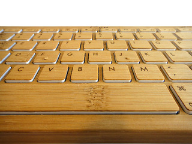
Hasta ahora se han visto varios productos hechos a base de bambú que nos parecieron interesantes. Considerando que ahora se empezó a tomar más conciencia en base al cuidado del medio ambiente es lógico que estos productos empiecen a ser más y más comunes. En esta oportunidad un diseñador puso en Kickstarter una de sus creaciones que resulta más que interesante: iZen Bamboo.
Una de las características que lo hace más interesante es que está hecho en un 92% de bambú y es completamente reciclable. Esto no interesaría en absoluto si el dispositivo fuera malo, pero no lo es. Es Bluetooth y tiene una batería regarcable, pero también se conecta a través del puerto USB.
Lo malo es que por ahora no se puede comprar. Por ahora sólo están recolectando dinero para comenzar a fabricarlos cuando los tengan listo. Los creadores tienen varios modelos funcionando ahora y se encuentran realizando el betatesting. Le quedan poco menos de 20 días a la campaña en Kickstarter y ya tienen la mitad del dinero que necesitan (que es US$18.000).
Si son fanáticos de los dispositivos renovables y, además, están interesados en un producto único hecho de madera sin duda el iZen Bamboo será por demás interesante.
Mon, 26 Mar 2012 14:02:55 GMT
Logitech BCC950 ConferenceCam: una cámara especialmente creada para realizar conferencias
Logitech BCC950 ConferenceCam: una cámara especialmente creada para realizar conferencias
Logitech anunció la BCC950 ConferenceCam que es, como su nombre lo indica, una cámara hecha especialmente para realizar conferencias que tiene un pie, transmite a 1080p a 30fps por segundo y tiene un altavoz incorporado. Esto quiere decir que no usarás el ordenador para nada más que conectarla. Como se explica en el video que acompaña la entrada, fue creada para pequeños grupos de personas y que éstas no tengan que utilizar las cámaras de portátiles y que la transmisión se convierta más en un problema que algo usado para...
Logitech anunció la BCC950 ConferenceCam que es, como su nombre lo indica, una cámara hecha especialmente para realizar conferencias que tiene un pie, transmite a 1080p a 30fps por segundo y tiene un altavoz incorporado. Esto quiere decir que no usarás el ordenador para nada más que conectarla.
Como se explica en el video que acompaña la entrada, fue creada para pequeños grupos de personas y que éstas no tengan que utilizar las cámaras de portátiles y que la transmisión se convierta más en un problema que algo usado para comunicarse.
Se conecta a través del puerto USB, funciona tanto en Mac como en PC y tiene la capacidad de conectarse directamente con Skype. A todo esto se le suma un control remoto que permitirá ubicar la lente donde lo desees. Esto es interesante porque si estás dando una presentación se puede alejar o acercar la cámara a gusto.
Lo bueno es que no tiene un precio demasiado elevado considerando que está enfocado a empresas. Cuesta US$250 y saldrá a la venta en todo el mundo en mayo.
Mon, 26 Mar 2012 00:04:22 GMT
Galileo: brazo robótico para dispositivos iOS
Galileo: brazo robótico para dispositivos iOS
Cuando creíamos que ya lo habíamos visto todo en cuanto a adminículos para equipos iOS, llega un nuevo proyecto de Kickstarter y nos deja con los dientes largos. Nos referimos al brazo robótico Galileo, que compatible con los iPhone 3/4 e iPod Touch, le añade la posibilidad de poder enviar audio y vídeo con control remoto sobre sus movimientos en los ejes “X-Y”. Vamos, algo muy similar a una “cabeza caliente” para iPhone, pero sin el eje “Z” Las posibilidades del equipo son infinitas: desde aplicaciones fotográficas como fotografía 360º...
Cuando creíamos que ya lo habíamos visto todo en cuanto a adminículos para equipos iOS, llega un nuevo proyecto de Kickstarter y nos deja con los dientes largos. Nos referimos al brazo robótico Galileo, que compatible con los iPhone 3/4 e iPod Touch, le añade la posibilidad de poder enviar audio y vídeo con control remoto sobre sus movimientos en los ejes “X-Y”. Vamos, algo muy similar a una “cabeza caliente” para iPhone, pero sin el eje “Z”
Las posibilidades del equipo son infinitas: desde aplicaciones fotográficas como fotografía 360º computerizada, hasta vigilancia de bebés, pasando por videoconferencia o el convertir nuestro iPhone en un equipo de videovigilancia improvisado. Como habréis supuesto (y como se puede apreciar en el vídeo) el sistema toma ventaja del control táctil de los equipos iOS para el control de todo el sistema, por lo que para hacer pan o tilt, tan sólo tendrás que mover en esas direcciones tu dedo sobre la pantalla en donde estés viendo el vídeo.
Para no dejarte nunca en la estacada, este brazo robótico Galileo, también carga tu iPhone de modo que nunca te quedes sin energía. Finalmente indicar que el equipo ya es una realidad gracias a la abrumador éxito que ha tenido, por lo que el fabricante ha decidido liberar un SDK para que los creadores de aplicaciones para dispositivos iOS le puedan sacar todavía más utilidades a este increíble invento. Os dejo con unas fotos y un vídeo del sistema en pleno funcionamiento:
Sun, 25 Mar 2012 22:05:23 GMT
XBMC 11.0 “Eden” versión final ya entre nosotros
XBMC 11.0 “Eden” versión final ya entre nosotros
Seguramente recordareis que hace menos de tres meses os informábamos sobre la última versión (v.11) de uno de los reproductores de medios más importantes del momento: XBMC. Por aquel entonces estábamos hablando todavía de una versión en pruebas que se liberaba para comprobar estabilidad y funciones. Pues hoy definitivamente podemos anunciar que la versión final XBMC v.11 “Eden” ya está disponible. La podéis descargar desde la página oficial del fabricante y como se anunciaba en la versión “de prueba”, incluye como mayor novedad la posibilidad de conectar mediante AirPlay con...
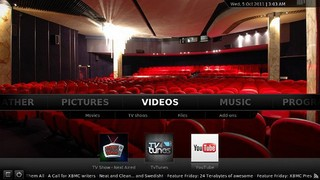
Seguramente recordareis que hace menos de tres meses os informábamos sobre la última versión (v.11) de uno de los reproductores de medios más importantes del momento: XBMC. Por aquel entonces estábamos hablando todavía de una versión en pruebas que se liberaba para comprobar estabilidad y funciones. Pues hoy definitivamente podemos anunciar que la versión final XBMC v.11 “Eden” ya está disponible.
La podéis descargar desde la página oficial del fabricante y como se anunciaba en la versión “de prueba”, incluye como mayor novedad la posibilidad de conectar mediante AirPlay con dispositivos de la casa Apple. Compatible con dispositivos Windows, Linux, Mac, OSX y versiones jailbrokeadas de equipos iOS, se puede decir que no existe prácticamente equipo en el mercado en donde no se pueda instalar este potentísimo gestor de medios.
Se ha aprovechado la ocasión para renovar la apariencia de su interface “Confluence” al que se le ha dotado de nuevas presentaciones en modo librería, soporte de redes, así como añadidos como información metereológicas y algunos otros extras. Indicar también que tenemos una versión dedicada para XBMCbuntu que incluye un escritorio LXDE, navegador Chrome (con soporte para flash) y arranque dual a elegir entre escritorio Linux o XBMC.Además en las instalaciones Linux se añade soporte para decodificación de vídeo con hardware AMD.
Lo dicho, si sois amantes de la imagen, queréis un reproductor que pueda con todo y que de los menores problemas; no se a que estáis esperando para bajaros XBMC.
Sat, 24 Mar 2012 03:02:07 GMT
Samwa lanza un lector de tarjetas SD, microSD y hub USB para Android
Samwa lanza un lector de tarjetas SD, microSD y hub USB para Android
¿Quién necesita la nube y procesados convencionales para transferir las imágenes de tu cámara al smartphone cuando tiene un lector de tarjetas que puede hacerte la vida fácil? Sanwa, aunque un poco lejos, ha sido el encargado de lanzar un complemento ideal para quienes quieren pasar en todo momento información a sus tabletas o smartphones con Android. Se trata del GADR002W 400, un conectar que servirá de intermediaro para transferir el contenido de una tarjeta SD o microSD directamente a un smartphone o tableta con Android. Pero si no tienes...
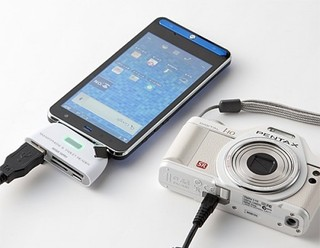
¿Quién necesita la nube y procesados convencionales para transferir las imágenes de tu cámara al smartphone cuando tiene un lector de tarjetas que puede hacerte la vida fácil? Sanwa, aunque un poco lejos, ha sido el encargado de lanzar un complemento ideal para quienes quieren pasar en todo momento información a sus tabletas o smartphones con Android.
Se trata del GADR002W 400, un conectar que servirá de intermediaro para transferir el contenido de una tarjeta SD o microSD directamente a un smartphone o tableta con Android. Pero si no tienes tarjetas, sino unidades USB o conectores micro USB también podrán transferir contenido, algo realmente útil. Es un completo hub que si bien no se especifica también es útil para conectar teclado y mouse mediante USB. Apple y otras empresa ofrecen un kit de fotografía similar pero no es tan completo, incluso Eye-Fi también intenta hacer que sea fácil transferir imágenes desde la cámara a las tabletas o smartphones mediante aplicaciones, pero de igual forma sólo funciona con tarjetas propietario.
Para que los dispositivos móviles sean compatibles con el Sanwa GADR002W 400 tienen que con Android Android Honeycomb. Su precio es de unos 40 euros que se traduce a 3.280 yenes porque sólo está disponible en Japón, algo lamentable porque si tuviera la oportunidad sería una compra practica. Esperemos que como todo producto útil e interesantes puede tener alguna alternativa para este lado del mundo.
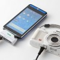
Sat, 24 Mar 2012 01:05:53 GMT
Sharp comienza el lanzamiento de sus nuevos televisores Series 7 y 8
Sharp comienza el lanzamiento de sus nuevos televisores Series 7 y 8
Pues llegó el día, llegó la romería. En este caso le ha tocado el turno a Sharp que acaba de poner en las calle las primeras unidades de su nuevos televisores de la gama 2012. Nos referimos a las nuevas Series 7 y 8, que ya están disponibles, eso sí en los tamaños grandes de la gama. En cuanto a la Series 7, los equipos ya disponibles son los tope de gama, que con tamaños de 6o y 70 pulgadas no van a ser precisamente baratos, ya que saldrán al...
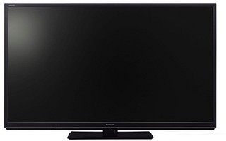
Pues llegó el día, llegó la romería. En este caso le ha tocado el turno a Sharp que acaba de poner en las calle las primeras unidades de su nuevos televisores de la gama 2012. Nos referimos a las nuevas Series 7 y 8, que ya están disponibles, eso sí en los tamaños grandes de la gama.
En cuanto a la Series 7, los equipos ya disponibles son los tope de gama, que con tamaños de 6o y 70 pulgadas no van a ser precisamente baratos, ya que saldrán al mercado con precios respectivos de $2300 y $3300. Ambos con paneles LED, soporte 3D y como no, funciones Smart TV con acceso a servicios de alquiler de películas on-line como Netflix, Hulu así como a redes sociales como Facebook, Skype y similares.
En cuanto a la Series 8, los modelos disponibles incluyen el famoso sistema de cuatro colores básicos Quattron, que en tamaños de 60, 70 y 80 pulgadas saldrán al mercado con precios respectivos de $2699,99, $3799,99 y $5999,99. Como supondréis estamos ante el tope de gama de la casa, por lo que además de todo lo presente en la serie anterior, tenemos chasis ultradelgado, el nuevo sistema Quad Pixel Plus 2 de Sharp y paneles Edge Led con 120Hz de refresco, que incluso llegan hasta los 480Hz en el modelo de 80 pulgadas. Habrás que ver a qué precios hacen finalmente su aparición por tierras españolas…
Fri, 23 Mar 2012 22:59:33 GMT
Sistema de videovigilancia comprueba en 1 segundo tu cara entre 36 millones
Sistema de videovigilancia comprueba en 1 segundo tu cara entre 36 millones
Niños y niñas: el Gran Hermano ya está entre nosotros. Se acaba de presentar en la feria Security Show que se está a celebrar estos días en Japón y desde luego, este novedoso sistema de videovigilancia se parece muy mucho al opresivo mundo relatado en “1984”: un “ente” todopoderoso que todo lo controla y todo lo ve. Eso mismo es lo que es capaz de hacer el sistema de CCTV avanzado creado por Hitachi Kokusai Electric. Estamos hablando de un conjunto compuesto de software y hardware especialmente destinado para empresas...
Niños y niñas: el Gran Hermano ya está entre nosotros. Se acaba de presentar en la feria Security Show que se está a celebrar estos días en Japón y desde luego, este novedoso sistema de videovigilancia se parece muy mucho al opresivo mundo relatado en “1984”: un “ente” todopoderoso que todo lo controla y todo lo ve. Eso mismo es lo que es capaz de hacer el sistema de CCTV avanzado creado por Hitachi Kokusai Electric.
Estamos hablando de un conjunto compuesto de software y hardware especialmente destinado para empresas de control de multitudes y que permitirá tener a todo el mundo fichado en cuestión de segundos. Este nuevo sistema supone un gran avance sobre los equipos actuales, ya que puede “identificar” cualquier cara en cuestión de segundos. Y lo digo de forma literal, puesto que nada más que le señales una cara, te puede identificar a esa persona entre otras 36 millones en tan sólo unos segundos.
Lo mejor del asunto, es que funciona en tiempo real, por lo que podrás conocer todos los pasos de una persona en cualquier recinto, como un estadio de fútbol, centro comercial, casino o incluso por la calle. Tan sólo necesita un tiro de cámara de al menos 30º hacia la cara de alguien y ¡ZAS! estás fichado. Conociendo la obsesión que tienen los británicos con los sistemas de videovigilancia (de hecho es el país con más cámaras de vigilancia del mundo), seguro que ya se les está haciendo la boca agua sólo de pensar en las aplicaciones de este sistema para las Juegos Olímpicos de Londres 2012. Yo en cambio, solo pienso: qué miedo, señores…